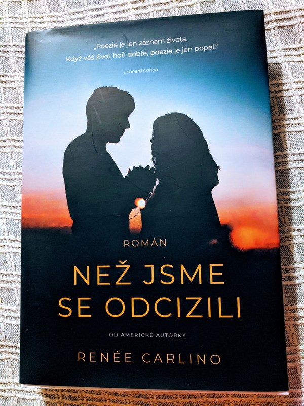

Do četby romantických příběhů, nebo minimálně těch prvoplánových, se zas až tak často nepouštím, ale tentokrát jsem s novou nabídkou recenzního výtisku od knihkupectví Megaknihy.cz udělala výjimku. Koneckonců podzim a tahle divná doba je jako stvořená na menší útěk z reality všedních dnů…
Grace a Matt jsou staří známí z časů, kdy oba studovali v New Yorku na univerzitě. Dnes, o 15 let později, na sebe náhodou narazí v metru a toto krátké setkání roztáčí kolotoč vzpomínek, z nichž se čtenář dozvídá, jak se jejich vztah během těch prvních měsíců v minulosti vyvíjel a co zásadního se mezi nimi odehrálo, že se pak od sebe na dlouhých 15 let odloučili…
První polovina knihy, která vypráví tu dávnou historii jejich vztahu, se mi opravdu líbila, přečetla jsem ji jedním dechem a i ta romantika tam byla dávkována v takové nepřeslazené a nekýčovité míře, že mě to opravdu docela chytlo za srdce a vlastně mi to přišlo i jako poměrně uvěřitelný a hezký příběh.
V té druhé půlce jsem se trochu zasekla, kniha začala váznout, děj postrádat logiku a postavy uvěřitelnost. Ale už jsem byla lapena, a tak jsem stejně pořád musela pokračovat ve čtení, protože jsem byla zvědavá, jak to bude s Mattem a Grace dál. Ačkoliv pro mě bylo to finální vyústění slabší a chování postav místy přitažené za vlasy, všichni víme, že tyhle romány jinak než happy endem skončit ani nemůžou (to si sem dovolím napsat i bez předchozího upozornění na spoiler :D) a mě by tady vlastně jiný typ konce asi dost rozhořčil.
Tak či tak se autorce rozhodně nedá upřít talent udržet čtenářovu pozornost a zájem o osud hlavních postav. To rozhodně nedokáže každý spisovatel. Příjemným zpestřením knihy je i to, že chvíli se slova ve vyprávění ujímá Matt a pak zase Grace.

Pokud tedy hledáte nějakou nenáročnou oddechovku na pošmurné koronavirové dny, určitě vás román Než jsme se odcizili v tomto směru nezklame. Koneckonců nikdo nemáme v knihovničce pouze díla nositelů Nobelovy ceny za literaturu, že ;-)